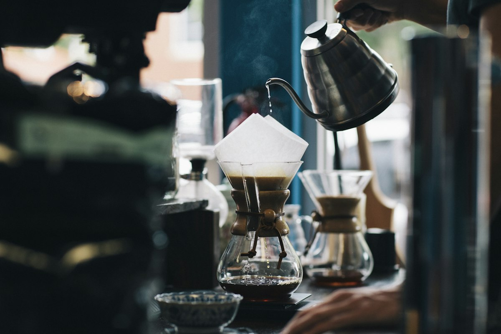

Tentang Kami
Kenalan dulu, yuk. Ini cerita singkat di balik Kopi Senja.

Dari kedai kecil di Palu
Kopi Senja buka pertama kali tahun 2019 di sebuah ruko kecil di Jl. Basuki Rahmat. Awalnya cuma ada empat meja, satu mesin espresso bekas, dan satu orang yang merangkap jadi barista sekaligus kasir.
Seiring waktu, pelanggan makin ramai. Ada yang datang untuk kerja, kumpul sama teman, atau sekadar minum kopi sore-sore. Sampai sekarang kami masih di tempat yang sama, dengan menu yang tidak banyak berubah.
Kami percaya kedai kopi tidak harus mewah. Yang penting kopinya enak, harganya masuk akal, dan orang-orang betah duduk lebih lama dari yang mereka rencanakan.
"Saya cuma ingin orang punya tempat untuk berhenti sebentar, minum kopi, lalu lanjut lagi."
Rizal, pemilik Kopi SenjaJam Buka
| Senin – Jumat | 08.00 – 22.00 WITA |
|---|---|
| Sabtu – Minggu | 09.00 – 23.00 WITA |
Kalau tutup karena libur nasional, biasanya kami infokan di Instagram.
Lokasi
Jl. Basuki Rahmat No. 45
Palu, Sulawesi Tengah 94111
Patokannya: seberang toko buku, sebelah parkiran motor.
Mau ngopi bareng kami?
Mampir langsung ke Kopi Senja atau hubungi kami kalau ada yang mau ditanyakan.
Hubungi Kami